Reimaging the PC
This topic includes information about how to reimage the PC on the instrument.
Step 1: Be Sure the Instrument Is Ready
Be sure all tests have been completed and that the instrument is in a GREEN (Ready) status.
Step 2: Export Test Results
Step 3: Confirm the Firmware Meets Specifications
| Component | Firmware Version |
|---|---|
| SpinMixer | 1.1.0.0 or newer |
| TempControl | 1.2.0.0 or newer |
| SingleProcUltrasonic | 1.2.0.0 or newer |
| LumiReader | 2.2.0.0 or newer |
Step 4: Clear Pending Calibration Events
Clear all pending calibration events.
- In the Console App select the Calibration event indicator to open the Calibration Events page.
- Clear all calibration events in the list.
- Select Save.
Step 5: Unload Reagent Packs
- Physically unload all reagent packs from the reagent storage module (RSM) and Tray Loader and place them in an external refrigerator to prevent compromising the stability of the packs.
- In the Console App select the Reagents task indicator to open the Reagents page.
- Select Materials List to open the Materials page.
- Select Reagent Position List to open the Reagent Position List.
- Select Unload All.
Step 6: Delete Old Files from the D: Drive
Delete old files from the D:drive.
- Sign in to use the BeckmanAdmin account. See Signing In to Use the BeckmanAdmin Account for more information.
- Go to D:\ProgramData\Beckman Coulter\Logs\ and in each subfolder, delete all log files older than one week from the current date.
- Go to D:\Backups\ and delete all backup folders except for the two most recent folders.
- Go to D:\Backups\DB_Backups\ and delete all ICE_SAMPLES_<date>_<time>.BAK files except for the most recent file.
Step 7: Back Up Alignment and Configuration Data
Back up alignment and configuration data.
- In D:\Backups\ create a new folder named Image 3.0 Backup .
- Back up alignment and configuration data. See Backing Up Alignment and Configuration Data for more information about how to create the .backup file.
- Copy the .backup file to the D:\Backups\Image 3.0 Backup folder.
Step 8: Record DxS IntelliServe Configuration Information
Record information about the DxS IntelliServe configuration.
- In the Console App go to to open the Connector: DxS IntelliServe page.
- Capture a screenshot or open a new text file in Notepad to record the Instance ID, RMS ID, and RA ID.
- Save the screenshot or text file in the D:\Backups\Image 3.0 Backup folder.
Step 9: Close the Console App and Machine Control App
Close the Console App and the Machine Control App.
Step 10: Copy Files to the Backup Folder
Copy files to the D:\Backups\Image 3.0 Backup folder.
- Copy the D:\ProgramData\Beckman Coulter\Falcon folder to the D:\Backups\Image 3.0 Backup folder.
- Copy the C:\Program Files (x86)\DxI 9000\settings\ folder to the D:\Backups\Image 3.0 Backup folder.
- Copy the C:\ProgramData\Beckman Coulter\RMS folder to the D:\Backups\Image 3.0 Backup folder.
Step 11: Connect the Image Drive to the PC
Connect the USB drive with the new image to the PC.
- If the barcode reader is connected to the USB 6 or USB 5 port, remove the cable connector from that port.
- Connect the USB drive with the new image to the USB 6 port.
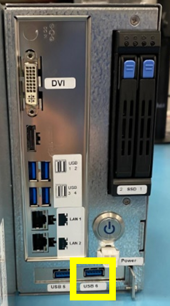
Step 12: Connect to the Databases
Open Microsoft SQL Server Management Studio to connect to the databases. See Connecting to the Databases for more information.
Step 13: Back Up the Databases
Use the Service App to back up the databases. See Backing Up the Databases Using the Service App for more information.
Step 14: Check the Image Version Installed on the Instrument
View the system properties to check which image version has been installed on the instrument.
- In the Start menu type
View Advanced System Settings to open the Advanced tab on the System Properties dialog.
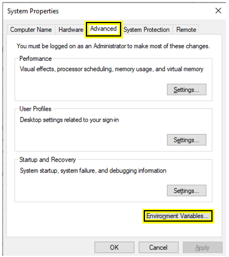
- Select Environment Variables to open the Environment Variables dialog.
- In the System variables list find Image_Version.
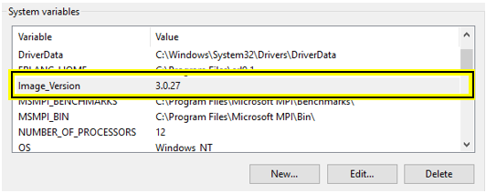
- If Image_Version is older than 3.0 or does not exist, proceed to Step 15: Clear the Hard Drive Passwords (for images earlier than 3.0 only).
- If Image_Version is 3.0, proceed to Step 20: Turn Off BitLocker.
Step 15: Clear the Hard Drive Passwords (for images earlier than 3.0 only)
- Restart the PC. While the PC restarts, press the
Delete key multiple times until the hard drive password dialog is displayed.
Note: If the hard drive password dialog is not displayed, restart the PC and try again.See Restarting the Console PC for more information.
- Press Enter.
- Type the password, which will be Beckman or Beckman12!, depending on the serial number and when the most recent update was completed.
- Go to .
- Clear the passwords.
- For each drive, select the drive and press Enter.
- Type the current password but leave the new password fields blank.
- Press F10 to save and exit.
- Select YES to restart the PC.
Step 16: Back Up the Files to a USB Drive (for images earlier than 3.0 only)
- Sign in to use the BeckmanAdmin account. See Signing In to Use the BeckmanAdmin Account for more information.
- Close all applications.
- Insert the USB backup drive into the USB connector on the PC.
- On the USB drive, create a new folder named D Drive Backup.
- Copy all files and folders from
D:\ to the
D Drive Backup folder on the USB drive. Wait 2 hours or more for the system to finish copying the files.
Warning: If you fail to back up files, the data will be lost.Note: If any files fail to copy to the D Drive Backup, select Skip to continue.Note: If the contents of the D:\ drive are too large to back up onto the USB drive, only back up the D:\Backups\Image 3.0 Backup folder from the PC to the USB drive.
Step 17: Convert Disk 1 to GPT (for images earlier than 3.0 only)
- Right-click the Windows key and select Disk Management to open the Disk Management window.
- Right-click
Backup (D:) and select
Delete Volume.
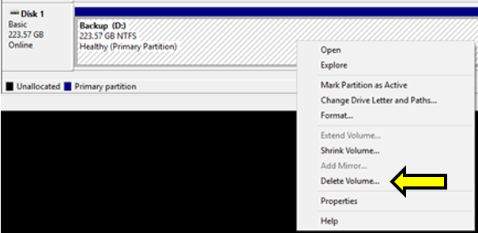
- Select
Yes.
Note: Selecting Yes will delete all data from the D:\ drive. Select Yes to prompt for disk in use.
- Right-click
Disk 1 and select
Convert to GPT Disk.
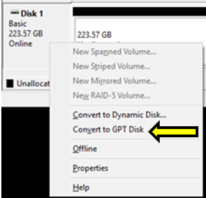
- Right-click
Unallocated and select
New Simple Volume.
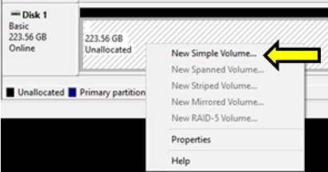
The New Simple Volume Wizard will open.
- Select Next.
- Use the default volume size. Select Next.
- Select drive letter
D. Select
Next.
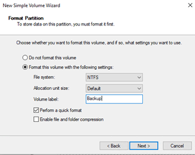
- Select Format this volume with the following settings.
- Select NTFS for the File system.
- Select Default for the Allocation unit size.
- Type Backup in the Volume label box.
- Select Perform a quick format.
- Clear Enable file and folder compression.
- Select Next.
- Select Finish. Wait for Backup (D:) to appear in the list.
- Right-click Disk 1 and select Properties to open the Properties window.
- In the Volumes tab confirm the volume Type is Basic and the Partition style is GUID Partition Table (GPT). If not, repeat this procedure.
Step 18: Restore Files to the D: Drive (for images earlier than 3.0 only)
- Copy all files and folders from the
D Drive Backup folder on the USB drive to the
D:\ drive.
Note: If you fail to restore files, the data will be lost.Note: Select Skip to continue for any messages related to Solidcore.
- Delete the D Drive Backup folder on the USB drive.
Step 19: Flash the BIOS (for images earlier than 3.0 only)
- Insert USB flash drive with the new image into the USB connector on the PC.
- Go to the USB flash drive and open BIOS Flasher B226.29A.exe.
- Select
Setup.
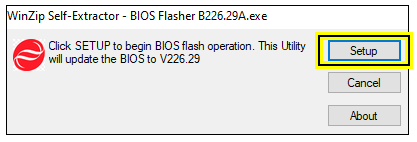
The PC will restart automatically.If Macrium Reflect opens, wait until it opens completely, and then- Select the red power button icon.
- Select Shutdown.
- Select OK to turn off the PC.
Step 20: Turn Off BitLocker
- In the Start menu type BitLocker to open the BitLocker Drive Encryption control panel.
- Select Turn off BitLocker. The notification Your drive will be decrypted. This might take a long time, but you can keep using your PC during the decryption process will be displayed.
- Select Turn off BitLocker. Wait 30 minutes or more for the D: drive to display BitLocker Off.
- Restart the PC.
If Macrium Reflect opens, wait until it opens completely, and then
- Select the red power button icon.
- Select Shutdown.
- Select OK to turn off the PC.
- Turn off the instrument. See Turning Off the Instrument for more information.
Step 21: Remove the Backup drive.
Remove the SSD drive labeled Backup from the computer.
- Open the bottom right door of the instrument.
- Push the blue tab on one of the SSD drives to release it.
- Remove the SSD drive from the computer.
- Confirm the SSD drive is labeled Backup. If the SSD drive is labeled OS Drive, insert the drive into the computer, remove the other SSD drive, and confirm the SSD drive is labeled Backup.
Step 22: Install the New Image onto the PC
Install the new image onto the PC.
- Insert USB flash drive with the new image into the USB connector on the PC.
Important: Be sure the USB flash drive with the new image is the only USB drive connected to the PC.
- Turn on the PC. Press the Delete key multiple times until the you see the notification that Del has been pressed.
- Use the Arrow keys to go to the Boot tab.
- Select EFI and press Enter.
- Go to
EFI USB Device and press
F6. Repeat until EFI USB Device is at the top of the list.
Important: If there is more than one EFI USB Device on the list, be sure the USB flash drive with the new image is the only USB drive connected to the PC, restart the PC, and start over. See Restarting the Console PC for more information.
- Press
F10. Select
OK. The PC will restart and Macrium Reflect will open. You may have to wait several minutes for the application to open.
Tip: If any application other than Macrium Reflect opens, there might be an issue with the USB port. To resolve this issue, connect the USB flash drive with the new image to another USB connector on the PC and restart the PC.
- In Macrium Reflect, on the Restore tab, select
Browse for an image file to open the Select an image file dialog.
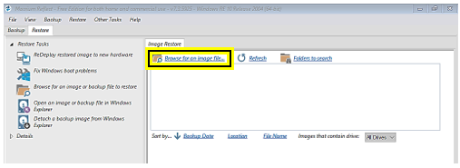
- Double-click the drive labeled
Image (or the drive that contains the image).
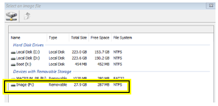
- Select DxI9000_Image_v3.0_6.13.23.mrimg.
- Select OK.
- Select Refresh.
- Select
Restore Image.
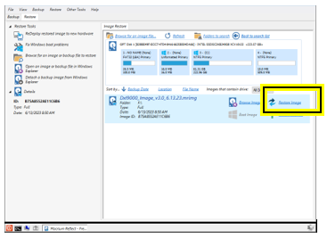
- If a Destination disk is not already selected, select
Select a disk to restore to and select
INTEL SSD....
Note: INTEL SSD... is approximately 220 GB in size.
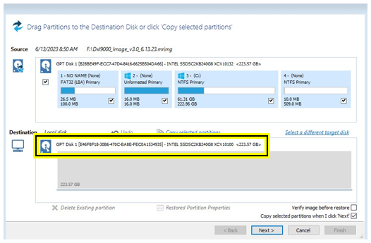
Note: If you are re-imaging from an existing Image 3.0, the number of partitions on the Destination drive may differ from the image shown above. - Select
Next.
If the Confirm Overwrite dialog is displayed with the warning The following drives will be overwritten, select All target volume data will be overwritten. Confirm to proceed and select Continue.
- Select
Finish. Wait 20 minutes or more.
Note: If the re-imaging fails on first attempt, try again.
When the process is complete, the notification Restore completed with the duration will be displayed.
- Select OK.
- Select Close.
- Select the red power button icon.
- Select Shutdown.
- Select OK to turn off the PC.
Step 23: Update the Boot Order
Use Windows Boot Manager to update the boot order.
- Insert the SSD drive labeled Backup into the PC.
- Turn on the PC. Press the Delete key multiple times until the you see the notification that Del has been pressed.
- Use the Arrow keys to go to the Boot tab.
- Select EFI and press Enter.
- Go to Windows Boot Manager and press F6. Repeat until Windows Boot Manager is at the top of the list.
- Press F10. Select OK. The PC will restart.
Step 24: Run Setup and Update 1 Scripts
Run the Setup and Update1 scripts.
- Sign in to use the BeckmanAdmin account. See Signing In to Use the BeckmanAdmin Account for more information.
- Go to the USB flash drive with the new image and double-click to open
Setup. The PC will restart.
Important: Do not open the Setup file as an administrator.
- Sign in to use the BeckmanAdmin account.
- Go to the USB flash drive with the new image and open Update1.
- Type the computer name. The computer name is DXI followed by the instrument's serial number (for example, DXI300001). The PC will restart. Ignore notifications.
Step 25: Confirm the C: Drive Is Encrypting
Confirm the C: drive is encrypting.
- Sign in to use the BeckmanAdmin account. See Signing In to Use the BeckmanAdmin Account for more information.
- In the Start menu type BitLocker to open the BitLocker Drive Encryption control panel.
- Confirm the
C: drive is encrypting.
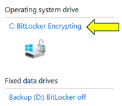
If the C: drive is not encrypting- Select TPM Administration to open the Trusted Platform Module Management on Local Computer window.
- In the Actions pane select Clear TPM... to open the Manage the TPM security hardware dialog.
- Select Restart. The PC will restart. Return to step 1 of this procedure to confirm the C: drive is encrypting.
- Close the BitLocker Drive Encryption control panel.
Step 26: Run Update2 Script
Run the Update2 script.
- Go to the USB flash drive with the new image and open Update2. Wait 10 to 30 minutes or more until the Enter database encryption passphrase dialog appears.
- Type the password. The password is
B3ckm@n followed by the instrument's serial number (for example, if the serial number is 300001, type
B3ckm@n300001).
Tip: When typing the password, be sure to only use an American English keyboard layout. Use the on-screen keyboard, if necessary.
The PC will restart.Note: If the question Do you want to find PCs, devices, and content on this network, and automatically connect to devices like printers and TVs? is displayed, select No.Note: Wait 60 to 90 minutes or more to complete Solidifier setup. - If a notification is displayed saying the LabUser account password has expired, select OK. Select the arrow button for the Confirm Password box to reset the password to be a blank password.
Step 27: Run Verify Script
Run the Verify script.
- Sign in to use the BeckmanAdmin account. See Signing In to Use the BeckmanAdmin Account for more information.
- Go to the USB flash drive with the new image and open
Verify. When the verification is complete:
- If the verification message says
Completed all test protocols. 0 Errors, and
- If you need to restore the databases, proceed to Step 28: Restoring the Databases (if necessary).
- If you are starting with new databases, proceed to Step 29: Set the DNS Suffix (For Internal Systems Only).
- If the log file indicates errors, restart the PC and open Verify again. If errors persist, return to Step 20: Turn Off BitLocker to start over with reimaging the PC.
- If the verification message says
Completed all test protocols. 0 Errors, and
Step 28: Restoring the Databases (if necessary)
Perform this procedure if you need to restore the databases. Otherwise, proceed to Step 29: Set the DNS Suffix (For Internal Systems Only) or Step 30: Install the Latest System Software.
- Sign in to use the BeckmanAdmin account. See Signing In to Use the BeckmanAdmin Account for more information.
- Open Microsoft SQL Server Management Studio to connect to the databases. See Connecting to the Databases for more information.
- In the Object Explorer window, right-click Database and select Restore Database.
- Select Device and select the ellipsis (...) button.
- Select Add to open the Locate Backup File dialog.
- Go to the D:\Backups\Image 3.0 Backup folder.
- Select All files* in the list adjacent to the File name box.
- Select Alignments DB.
- Select OK.
- Select OK.
- Select
OK to restore the database.
Note: If you are unable to restore the databases, the encryption password might have been typed incorrectly. If you are unable to determine the correct password, the databases will be locked and cannot be restored, and all patient, QC, calibration, and alignment data cannot be recovered. Give the test results that you exported in Step 2: Export Test Results to the customer, proceed to Step 29: Set the DNS Suffix (For Internal Systems Only), and contact technical support for assistance.
- Repeat until you have restored the remaining databases.
- ICE_DB
- ICE_QC_DB
- ICE_Samples_DB
- ICE_RMS_DB
Note: You do not have to restore the ICE_RSU_DB database. - Expand Databases.
- Right-click Alignments DB. Select Properties to open the Database Properties window.
- Select Options.
- In the Other options lis, in the Service Broker category, select True for Broker Enabled.
- Select
OK.
Note: If an error occurs, take the database offline and then online and try again.
- Repeat until you have restored the remaining databases.
- ICE_DB
- ICE_QC_DB
- ICE_Samples_DB
- ICE_RMS_DB
Note: You do not have to restore the ICE_RSU_DB database. - Close Microsoft SQL Server Management Studio.
Step 29: Set the DNS Suffix (For Internal Systems Only)
- In the Windows taskbar type Network Status to open the Network and Sharing Center.
- Select Change adapter options to open the Network Connections window.
- Right-click Ethernet 2 and select Properties to open the Properties window.
- On the Networking tab in the list select Internet Protocol Version 4 (TCP/IPv4).
- Select Properties to open the Internet Protocol Version 4 (TCP/IPv4) Properties window..
- Select Advanced to open the Advanced TCP/IP Settings window.
- On the DNS tab in the DNS suffix for this connection box type global.bcecorp.net.
- Select OK.
- Select OK.
- Select OK.
Step 30: Install the Latest System Software
Install the latest version of the system software.